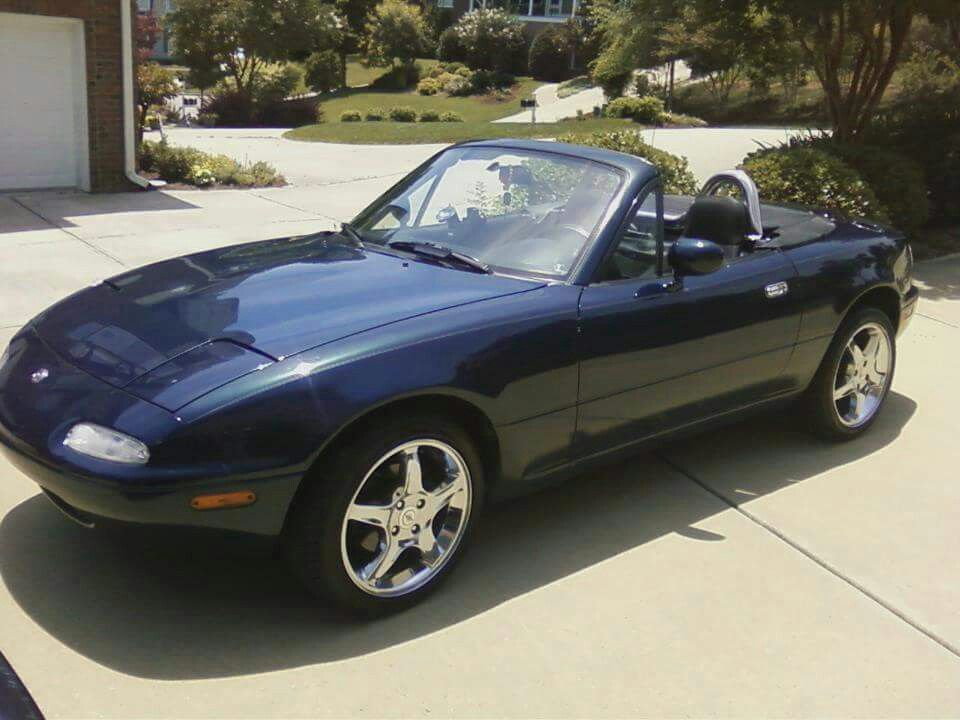

Moving out
I moved out of my parents home shortly after I graduated. I went to live with my grandparents in Arkansas. It was a very rural place that was very quiet and nice.

I moved out of my parents home shortly after I graduated. I went to live with my grandparents in Arkansas. It was a very rural place that was very quiet and nice.
I moved to arkansas to attend a nearby college called Henderson State University. I had gotten everything set up and I finally got to the school for registration when I had a feeling. I knew this wasnt for me. I told my dad and he asked if I was sure, and I said yes, then we left. I knew that type of teaching wasnt effective for me, and I knew I needed somewhere a little more technologically advanced to learn.
After a few months of living in Arkansas I moved back home. I had no idea what to do with my life at that point. When my brother told me that his job had an opening I sent my very small resume that day. I also bought my first car with the money I earned from that job! Its been a work in progress, but its a very fun hobby and when its working right its so fun!
I got hired at a temp agency called Randstad, it was my first job. I worked at a couple of warehouses with my brother but we never got hired on by any of them. My brother eventually moved on and found a different job, and I was about to do the same. I decided to try out one more warehouse though. I started at Reaction Auto Parts around the start of February 2019, and it was great! it was a small startup where I got to start fresh and get a good work ethic. I still enjoy it a lot, but I know that I cant do physical labor my whole life. I have always wanted to work with computers and electronics, and I know that will never happen there, so I had to keep moving.
I heard of Launchcode from my father. I went ahead & applied, and got accepted! I was learning python at this course, and was doing very well! While doing this I was also still working at my job full time. A little after unit 1 I had to drop out to take care of my mom. Now that my mom is back to good health I was ready to try this again! And thats how I got here!